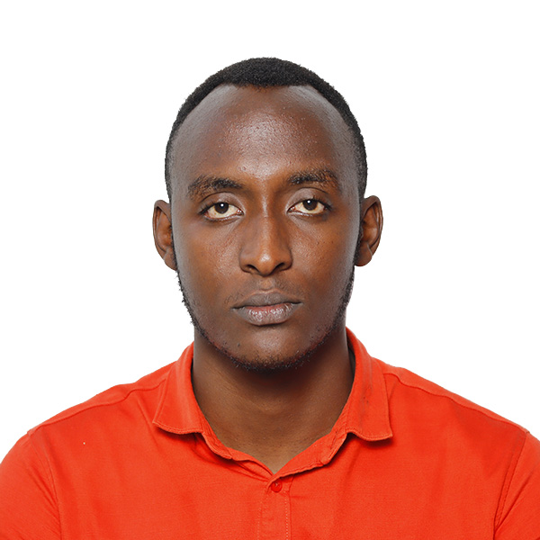

Davis RUKUNDO | WDD 130
Davis Rukundo is a nursing student at the University of Rwanda and a passionate Public Health Advocate with a strong interest in health research and digital innovation. He is also pursuing a Bachelor's degree in Software Engineering from Brigham Young University-Idaho, USA, with a focus on integrating modern technology into healthcare systems. Davis serves as the Guild President at the University of Rwanda, Rwamagana Campus, where he champions student leadership and academic excellence. He is also the co-founder of JOY Achievers Initiative, an NGO dedicated to reintegrating street children into families and education.